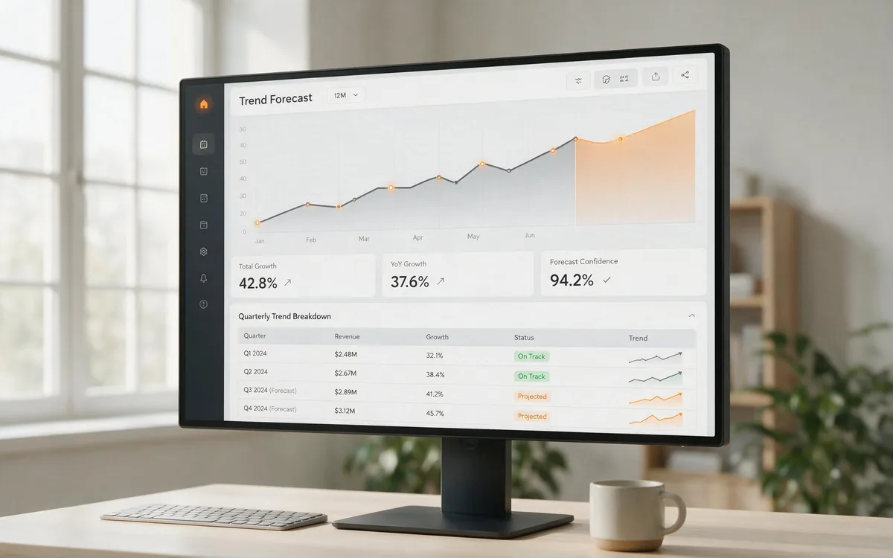

Research
Market Reports
Long-form market intelligence on smart retail and AI vending, with cited trends and operator takeaways.
Market intelligence · Cited sources

Report
2026 Smart Retail Trends to Watch
Edge AI, cashless expectations, and platform consolidation are redefining unattended retail. Eight trends and what they mean for operators.
Report
AI Vending Market Size & Forecast (2026-2036)
Global and regional market sizing, CAGR forecasts, and the four drivers behind double-digit growth in AI vending.

Report
The US Unattended Retail Opportunity
Labor costs, cashless habits, and a scenario opportunity matrix for the largest AI vending market.

Report
How AI Vending Works: The Technology Stack
A plain-English breakdown of computer vision, IoT, payments, and the analytics behind unattended retail.
Go deeper
Want the data behind the reports?
Request the sources and talk through what the trends mean for your market.